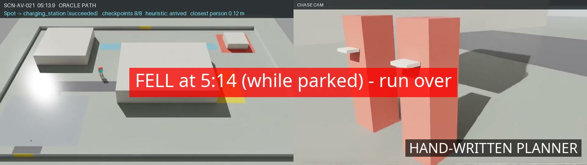
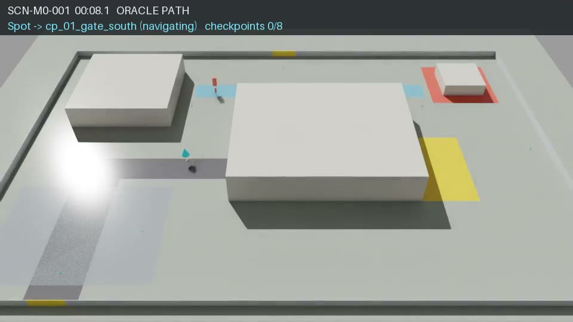

Robot learning in simulation
Machines among us
What we taught a walking robot and a robot arm, what broke, and why every large organization needs people who understand this now.
Open with the promise: real videos, real numbers, including the failures. Everything in this talk ran on one desktop workstation in a few weeks.
Exec: you'll leave with a clear sense of what is real today, what isn't, and why to invest in people now. Beginner: no math needed; every idea has a video. Agent builder: you already know half of this, you just call it tools and evals. LLM trainer: the training algorithm is one you already use.
Keys: arrows to move, N for notes, G for the grid, F for fullscreen. The companion interactive page is explorer.html.
Press → once from the title card to land here; the reel starts with sound. With "Pause at key moments" on, it stops at each diamond on its timeline and shows a card saying why: talk to it, then press → or Space to continue. Turn the toggle off to play straight through. Once the reel has ended, → goes to the next slide. If the room has no audio, press "Sound on" to mute it.
Don't narrate the first pass. Let it land, then say: "Everything you just saw is real data from one workstation, including the failures. Let's take it apart."
Same seed, same walkers, three brains
Three robots, one patrol, full run
This is the full run, playing at 8x; it takes about 45 seconds. Use the speed buttons or "Jump to the finish" if time is short. Three copies of the same compound, same random seed: top has no avoidance, middle is a planner a person wrote by hand, bottom is a policy that learned by trial and error. Each lane's tracker shows its checkpoints; a dot pops when a robot finishes, a red diamond when it gets knocked over.
How it ends: the learned policy finishes first, at 4:52. The planner finishes at 5:02. The robot with no avoidance gets knocked over at 4:55 with 7 of 8 checkpoints done.
Let the race play to the end: the lesson card appears over the trackers after the last event. Then go to the next slide, which is the lesson in full: the walkers were on a timetable fitted to the slow robot, so the two faster robots never faced the test. This learned policy is also the early one, trained against simple straight-line walkers.
Exec: the point is that we can stage the same hard moment as many times as we want and compare fairly. Beginner: nobody programmed the bottom robot's moves. Agent builder: an eval with three agents on an identical, replayable task, and a reminder to look at the whole trace, not the last screen. LLM trainer: same lesson as judging a model on the tail of one transcript.
What that race really tested
The test was timed to the slow robot

5:14 · patrol done, 8 of 8, parked · nearest walker 0.12 m
The walkers kept a fixed timetable , fitted to the robot with no avoidance.
The two smarter robots ran ahead. They passed every encounter before its walker arrived, so they never faced the test.
The only contacts were late walkers reaching the charger after the robots had parked. One knocked the parked planner over.
If the test doesn't react to the system under test, a faster system skips it. We rebuilt the crowd so pedestrians react to whichever robot is in front of them.
This is the lesson of the race, and it's the most transferable one in the talk. The walkers in that run were "book readers" on a timetable, and the timetable had been fitted to the slow robot with no avoidance. The planner and the learned policy turn while they walk, so they ran 30 to 40 seconds ahead by the last legs. They reached every encounter point before the walker meant to test them, so they never got tested. The only contacts in their runs were late walkers arriving at the charger after the robot had parked; one of them knocked the parked planner over at 5:14.
Every planner-versus-learned-policy comparison before we noticed this was confounded. The fix was closed-loop pedestrians: they see the robot, pick an intercept and react to whichever robot is actually in front of them, so every controller gets the same exposure. That's the crowd behind the numbers on the next slides.
We found it by watching the whole run. The last 30 seconds alone made the learned policy look stuck; it had simply finished first and parked.
Exec: a scripted test that doesn't react to the system you're testing can make a better system look worse, or a worse one look safe. Ask any vendor whether their scenarios react to the system under test. Beginner: it's like a driving test where the hazards are on a fixed clock: a faster driver gets past before they appear. Agent builder: same as a benchmark with fixed timing or fixed tool outputs that a faster or different agent sidesteps; make the environment respond to the agent. LLM trainer: a static eval set that the new model routes around isn't measuring it; you need adversarial, reactive evals.
What changed
The tools went open, and the cost fell to one desk
7B Open action models Foundation models that output motor commands. FLUX 3 Action predicts a robot's next moves and the video of what will happen.
4,096 Parallel worlds Open GPU simulators (Isaac Lab) run thousands of deterministic copies of a world at once.
2 h 2.1 billion steps One training run, one workstation GPU, about 290,000 simulated steps per second.
Three shifts. Models: action foundation models are now downloadable and fine-tunable, the way language models were a few years ago. Simulators: GPU physics runs thousands of worlds in parallel and replays them exactly. Cost: our steering policy saw about 2.1 billion steps of experience in two hours on one card.
Exec: this is the moment the barrier to experimentation dropped from a research lab to a single team. LLM trainer: 4,096 environments is your rollout batch; the simulator is your data generator. Beginner: 2 billion steps is roughly 6 years of a robot walking around, compressed into an afternoon.
The stack
Three brains, stacked. We trained the middle one.
MISSION Where to go, what to report Waypoints and event rules. Written by people, or an LLM agent.
SKILL · OURS How to get past people Learned with reinforcement learning. Reads lidar, outputs speed and turn ten times a second.
MOTOR How to walk NVIDIA's pretrained Spot locomotion policy. We did not train the legs.
Play with it: explorer · the stack
Be explicit: the walking you see is NVIDIA's pretrained locomotion policy that ships with Isaac Lab. What we trained is the steering layer that tells the legs how fast to go and where to turn. That split is how most real robots are built: high-level intent, a learned skill, a low-level controller.
Agent builder: this is an agent calling tools. The mission layer is your planner, the skill is a specialised sub-agent, and the legs are a tool with a narrow API: three numbers in, a gait out. Exec: you can buy or download layers and focus your own effort where your situation is unique. Beginner: like a driver (where), a reflex (dodge), and muscles (walk).
Why simulate
Fail ten million times before anyone gets hurt
Safe to fail Collisions cost nothing. Learning needs a lot of them.
Parallel Thousands of worlds at once, faster than real time.
Repeatable Same seed, same world. Any incident can be replayed frame by frame.
Ground truth We know where every person was. Scoring never relies on the robot's own opinion.
The catch: simulation is not reality. Every result here is a simulated result, and we treat it that way.
Four properties matter. Safety, parallelism, repeatability and ground truth. Repeatability and ground truth are underrated: they turn "the robot bumped someone" into a replayable, measurable event with exact distances and timestamps.
Exec: repeatability is what makes accountability possible: you can show exactly what happened and test the fix against the same moment. LLM trainer: the simulator is both your environment and your labeler. Beginner: a flight simulator for robots, except it also grades the pilot.
The world we built
A patrol through a fictional industrial site

100 × 150 m compound · 8 waypoints · deterministic
IT REPORTS SIX OBJECTIVE EVENTS
Perimeter breach Restricted-zone entry Person fall Vehicle in a prohibited zone Gate left open Route obstruction
It reports what happened. It never judges people.
The task: Spot walks a route through a made-up industrial compound and reports six kinds of objective events. A deliberate design choice: the robot reports facts (a gate is open, a person fell) and never makes judgments about people.
Exec: this is the shape of most early deployments: inspection, monitoring, reporting, around people who aren't part of the job. Beginner: a night-shift walk-through, but the walker is a robot.
It notices what matters
3 of 3 incidents found, 0 false alerts
Both scenarios, plus 10 of 10 randomized variants. Left: overhead view. Right: chase camera.
Staged incidents with known ground truth: the scenario script knows exactly when and where each event happens, so detection is scored against fact. All incidents found in both scenarios, no false alerts, and ten randomized variants all perfect.
Agent builder: this is the same pattern as a golden test set for an agent: scripted situations with known right answers. Exec: "zero false alerts" matters as much as "found them all"; alerts nobody trusts get ignored.
How it learns
See, act, get scored, adjust. Billions of times.
SEES · 134–198 NUMBERS
64 lidar sectors now and a moment ago, where the goal is, how fast it's moving.
DOES · 3 NUMBERS, 10× A SECOND
Forward speed 0–1 m/s, sideways ±0.5 m/s, turn ±1 rad/s.
THINKS · TWO SMALL NETWORKS
256 × 256 neurons each: one picks actions, one predicts how good things are going.
The robot never sees pixels in this setup. It sees a laser scan: 181 rays over 270 degrees, out to 12 metres, compressed into 64 sectors, plus the same scan from a moment ago so it can tell what's moving. Add where the goal is and its own velocity. Out come three numbers: forward speed, sideways speed and turn rate, ten times a second. The walking policy turns those into leg motions.
LLM trainer: tiny model, tiny observation, enormous number of episodes; the opposite of your usual shape. Beginner: it's like learning to cross a busy station with your eyes half-closed, using only how far away things are.
The algorithm: PPO
Do more of what beat expectations, but never change too much at once
less likely ±20% trust zone more likely
When an action turned out better than the critic expected, make it more likely. The gain stops counting past a 20% change, so one lucky episode can't hijack the policy.
γ 0.99 · λ 0.95 · clip 0.2 · 4 epochs × 4 minibatches · lr 3e-4 · entropy 0.003 · target KL 0.03
Explore: explorer · PPO
Proximal Policy Optimization. Collect experience with the current policy, compute how much better or worse each action did than expected (the advantage), and nudge the policy toward the better actions. The clip is the key idea: once an action's probability has moved more than 20 percent, further gain doesn't count. That keeps learning stable.
LLM trainer: this is exactly the PPO from RLHF. Same clipped objective, same KL guard. The difference is where the reward comes from: here it's physics and geometry, not a learned reward model, so there's no reward model to hack; but the reward function can still be gamed, as we'll see. Exec: stability matters because runs take hours; a training method that collapses wastes days.
The reward is the spec
Whatever you don't price in, it will ignore
Term When Weight Progress each metre closer to the goal +1.0 Time every step (0.1 s) −0.01 Smoothness jerky commands, ‖Δa‖² −0.01 Near miss inside 0.3 m of a person up to −1 / step Personal space (v3) inside 1 m −0.2 · depth² Contact · Wall episode ends −10 Success goal reached +10
Each line is a policy decision someone made: how much is a second worth? How close is too close?
Try your own weights: explorer · reward
This table is the real specification of the robot's behaviour. It doesn't know what a person is; it knows that getting close costs points and reaching the goal earns them. If time costs too much, it rushes through people. If contact costs too little, it shoulders past them.
Exec: notice these are value judgments: how much is speed worth against comfort and safety. Somebody in your organization will make these trade-offs for deployed machines; better if they understand them. LLM trainer: reward shaping is visible here in a way it rarely is with language. Agent builder: same as writing the success criteria for an agent eval: vague criteria, weird behaviour.
Five versions in two days
Each version fixed what the last one taught us
Easy People walk straight lines and never react.
96% success
v1 Add adversarial pedestrians that react to the robot.
31%
v2 Give it memory: scans from 0.3 s and 0.6 s ago, because 0.1 s hid their motion.
41%
v3 Realistic crowd density near the robot, plus a personal-space penalty.
32%, nothing moved
v4 Planned: fix how speed is represented. One change at a time.
not yet run
End-of-training success rate (smoothed) in each version's own world. Harder worlds mean lower numbers; these aren't directly comparable.
The story of iteration. The easy version learned fast because the world was easy. Adding pedestrians who react cut success to about a third. Memory helped: in a tenth of a second a pedestrian barely moves on the scan, but over 0.6 seconds you can see where they're heading. Version 3 tested a hypothesis (more realistic crowds plus a comfort penalty) and the hypothesis failed: nothing important moved. Saying that out loud is part of the method.
Beginner: each version is one experiment. LLM trainer: this is curriculum and environment design; the data distribution is the environment. Exec: two days, five versions, on one machine: that's the iteration speed that makes in-house expertise viable.
Training curves
An easy world is learned in minutes. A hostile one plateaus.
Success rate per training episode (smoothed) vs billions of simulated steps. Each run: 2 hours, 4,096 worlds. Explore: explorer · curves
Real training logs. The easy world hits mid-90s almost immediately and stays there. The hard versions climb for about a billion steps and flatten in the 30–40 percent range. A flat line can mean the task is hard, the observations are missing something, or the action space is wrong. Telling those apart is the expertise.
LLM trainer: same reading skills as loss curves; plateau diagnosis is the job. Exec: a curve going up is not the same as a robot you can deploy. The next slides show why.
Read the actions, not just the score
e¹ = 2.718: the ceiling we set on the policy's speed noise. Every run hit it.
Its throttle became an on/off switch
92% of forward commands were full speed. 1.6% were anything in between.
The output is squashed through tanh, so huge noise pins it to the ends. Our leading suspect for the crowd bumps. A suspect, not a proven cause, so v4 tests it on its own.
A diagnostic that came from looking at what the policy actually commands, not its score. The policy outputs a random number that gets squashed into a range. Its randomness grew until it hit the ceiling we'd set, so most samples land at the extremes: full speed or stop. A robot that can only sprint or stop is going to bump people in a crowd.
We call it a suspect, not a cause, because we haven't isolated it yet. Version 4 changes only this.
LLM trainer: analogous to watching entropy and token distributions, not just reward. Exec: "how did it do" and "how does it behave" are different questions; ask both.
Report the denominator
On the headline metric, it tied. Overall, it lost.
80 held-out runs, hard tier RL v1 RL v2 RL v3 Hand-written Adversarial hit rate per committed approach 37.2% 35.2% 40.0% 38.5% Runs that bumped an ordinary person 61 / 80 55 / 80 56 / 80 27 / 80 Median patrol time 462 s 388 s 405 s 377 s
Contacts per 100 person-seconds within 4 m: 1.23 learned vs 0.24 hand-written. Explore: explorer · denominator
The most important slide. We trained against adversarial pedestrians, and on that metric the learned policy tied the hand-written planner. If we'd only reported that number we'd have declared victory. But it bumped ordinary, non-adversarial people in more than twice as many runs, and it was slower. Normalised by exposure (person-seconds near the robot), the learned policy's contact rate was about five times higher.
Held-out means seeds 121 to 200, never used in development, and the checkpoint was chosen in advance.
Exec: when a vendor quotes one metric, ask for the others and ask for the exposure. Agent builder: same as an agent that aces your benchmark and fails on ordinary user requests. Beginner: a rate only means something if you know "out of what".
Watch the video, not just the table
Always run a control
Top: with avoidance vs none, people who never react. Zero contacts, closest pass 0.47 m. The control was knocked over at 164 s.
Bottom: the control in a live crowd.
Every experiment runs a no-avoidance control in the same world. Without it, "zero contacts" could just mean nobody walked near the robot. In the top clip people walk straight lines and never react; with avoidance the robot never touches anyone, closest pass 47 centimetres, while the control gets knocked over.
And we watch the videos. Once a table said the learned policy was "stuck". The video showed it had simply arrived 40 seconds early, before the pre-timed crowd showed up. The test had been tuned around the old controller. That's why the crowd is now closed-loop: people react to whatever robot is in front of them.
Exec: demand controls and footage, not just summary stats. Agent builder: read the transcripts, not just the pass rate.
Second robot: an arm
Teaching a hand: from 0 of 8 to 30 of 48
Scripted expert: scene camera and wrist camera, 30 Hz
A low-cost open arm (SO-101) moves a mug into a bowl. First we wrote an expert to generate demonstrations.
The breakthrough was measuring the asset: the mug's origin sat 2.2 cm off the cup's centre. Then 909 successful demos fine-tuned a 7B open action model in 3.4 h.
Different learning style: imitation. A scripted expert uses perfect knowledge of where things are to perform the task, and we record only what a real robot would have: two cameras and its joint angles. The model learns to copy it from pixels.
The expert went from zero to 62.5 percent by measuring things in the live simulator instead of trusting the files. The mug's reference point wasn't where the cup was. 909 successful demonstrations then fine-tuned FLUX 3 Action, a 7-billion-parameter open action model, with a small adapter in a few hours.
LLM trainer: this is supervised fine-tuning with LoRA, same as you'd do on a language model, just on video plus joint angles. Beginner: show it hundreds of examples, it learns to copy.
The overnight run
Seven successes. All seven fake.
Scored "success": the bowl spawned on top of the object The first real one: grasp, lift, carry, place
True overnight score: 0. A fixed random seed replayed one bad placement for every policy, and the success check never required a lift. With the jaw pre-opened: 1 of 6, genuinely. Try it: explorer · real or fake
A ten-hour overnight pipeline reported seven successes. We watched every one. All seven were bugs: one evaluation seed meant the same bad starting layout repeated for every model, the bowl sometimes spawned on top of the object, and the success check only measured distance, so "object near bowl" counted even if the robot never touched it. One was a physics explosion.
The right-hand clip is genuine: the model grasps, lifts, carries and places the mug. One in six, with the gripper pre-opened. It's the first real closed-loop success, and it's honest about how far there is to go.
Exec: automated success detectors are code, and code has bugs; demand to see the footage behind the number. Agent builder: LLM-as-judge has the same failure mode. LLM trainer: eval leakage and fixed seeds, the same lessons in a new medium.
Swap the model, keep the test · NVIDIA GR00T N1.7
It picks it up. It never lets go.
Night 1, blue block: lifted, carried to the bowl, held there for the full 20 s
8 / 72 strict real places · 6 objects × 12
Same 909 demos, objects, seeds and strict rule as FLUX (0 real). Lifted but not placed: in 48 of 59 , it never opened the jaw.
The cause was the data. The recorder reset the instant the object landed, so each demo held about 1 release frame in ~145.
We swapped FLUX 3 Action for NVIDIA's GR00T N1.7, a 3-billion-parameter action model with an official SO-101 / LeRobot fine-tuning path. It plans an action chunk in about 120 ms, against 0.9 to 1.2 s for FLUX. The test did not change: same objects, same seeds, same strict rule (the object must be lifted, end up in the bowl, and the bowl must stay upright).
Night 1 fine-tuned it on the same 909 demos: 8 of 72 strict. It learned to grasp and lift well. But in 48 of the 59 episodes where it lifted the object and didn't place it, it never commanded the gripper open at all. Watch the clip: it carries the block to the bowl and just holds it there.
The cause was in the demos, not the model. The environment reset the instant the object landed, so each demo had about one frame of letting go out of roughly 145. You cannot learn a behaviour that isn't in the data.
LLM trainer: this is a truncated-target bug: the last tokens of every example were cut off. Exec: when a model "can't do" something, check whether anyone ever showed it. Agent builder: same as fine-tuning on transcripts that end before the final tool call.
Night 2 · same model, re-recorded demos
Fix the data, not the model
training object mug · 20 / 24never trained on cracker box · 5 / 24
8/72 73/144
Strict, night 2 · training objects 61/96 , never trained on 12/48
Demos keep the release: median 42 release frames (862 demos), plus 5× loss weight on gripper open/close.
Night 2 fixed the recorder, not the model: labels are read before the reset, and every demo keeps a tail of release, retreat and settle. That gave 862 demos with a median of 42 release frames each. The fine-tune also put five times the loss weight on frames where the gripper opens or closes. Same base model, same recipe, evaluation doubled to 24 episodes per object.
Result: 73 of 144 strict, up from 8 of 72. Training objects 61 of 96; the two objects never in the demos, 12 of 48. The right clip is one of those: the cracker box was never in training.
Weighting is blunt: at the halfway checkpoint the gripper was commanded open too often and the score was 17 of 96; the final checkpoint recovered.
Exec: the biggest jump came from fixing data collection, not from a bigger model. LLM trainer: data curation and loss weighting on the rare tokens that matter. Beginner: half the time is still a miss; on new objects it's one in four.
Residual RL · night-1 GR00T frozen · sealed test seeds
Or learn when to let go
GR00T alone
+ release gate
TRAINING OBJECTS
58/465 → 382/465
NEVER TRAINED ON
22/236 → 122/236
A small PPO policy on top adds a ≤ 4° arm correction and a "release now" gate. Paired: same layout, same GR00T noise. Not comparable to night 2: different seeds, different base model.
The other route: keep night 1's model, the one that never lets go, frozen, and train a small reinforcement-learning policy on top. Every action chunk it adds a correction of at most 4 degrees to the arm and decides whether to open the gripper now. Reward comes from the same strict checks. About five hours on one GPU.
Then a paired test on sealed seeds never used in training: for each layout, GR00T alone and GR00T with the gate see the same scene and the same model noise. Training objects went from 58 of 465 to 382 of 465; objects never trained on from 22 of 236 to 122 of 236. The clips are the same cracker-box layout: alone, it holds the box over the bowl; with the gate, it lets go.
Say it carefully: this is "GR00T plus a release gate", not "GR00T learned to release". The opening itself is a fixed jaw-open action. And it's not comparable to night 2's 73 of 144: different seeds, and the gate sits on night 1's model.
LLM trainer: residual RL on a frozen imitation policy, like a small reward-trained head on a frozen base. Exec: two different fixes for one failure, measured on the same strict rule. Agent builder: a frozen model plus a small learned decision on when to act.
Can a local vision model tell whether it worked?
Check it after it settles. Fine‑tuning traded one error for another.
SERVED · 95 SETTLED FRAMES
Model Right False "done" Latency Gemma 4 12B 94.7% 5/50 0.64 s Qwen 3.8 27B 97.9% 1/50 1.9 s
At the instant of release, fingers still around the object, Gemma missed 24 of 45 real places. So the arm retreats and waits before the picture.
GEMMA 4 12B · 4-BIT QLoRA (UNSLOTH)
Base Tuned False "done", settled 12/50 3/50 Missed, at release 15/45 41/45 Missed, unseen objects 3/12 9/12
One training seed. Base re-scored in the fine-tune harness; compare within a table, not across.
After an attempt we asked a local vision-language model "has the object been placed in the bowl?" and scored it against the simulator's ground truth. On frames taken after the arm let go, retreated and the scene settled: Gemma 4 12B was right 94.7% of the time and said "done" on 5 of 50 failures, in 0.64 s; Qwen 3.8 27B was right 97.9%, 1 false "done" in 50, in 1.9 s. On frames at the instant of release, Gemma missed 24 of 45 real places. So when you take the picture matters as much as which model looks at it.
Then we fine-tuned Gemma with 4-bit QLoRA (Unsloth, one epoch, one training seed). It fixed the error we trained against: false "done" from 12 of 50 to 3 of 50. And it created another: at the release instant it missed 41 of 45 real places instead of 15, and on objects it never trained on 9 of 12 instead of 3. Not deployable. Our leading hypothesis, untested, is class imbalance in the training frames.
The left table is the served models; the right is the fine-tuning harness, whose base scores differently (12 of 50). Compare within a table.
Agent builder: this is LLM-as-judge, measured against ground truth, with its failure modes. LLM trainer: fine-tuning on one error metric moved the others; always re-run the full table. Exec: a checker is a model too, and it needs its own denominator.
Same model, split into skills · a planner calls pick up → move to → release
The skill undid its own lift, until a checker said "it's up"
STRICT PLACES · 20 S EPISODES · SAME SEEDS
Training objects Never trained on Skills, fixed 8 s per skill 28/96 7/48 Skills + fine-tuned checker 60/96 12/48 Night 2, one model end to end 61/96 12/48
Median time to a place: about 11 s for skills, 4.5 s for the single model.
Pick up lifted the object, kept moving for its full 8 s and set it back down; the after-skill check rightly said "not held", so it retried until time ran out.
Now the fine-tuned Gemma looks every second during the skill: "is it up?" On yes, stop and move on.
What still fails: in 59 of 72 failures the claw never got hold of the object. A checker can't fix a grasp.
The same GR00T model, fine-tuned on the demos cut into three skills, driven by a local Gemma planner that calls pick up, move to and release as tools. The first run scored 28 of 96 on training objects. The logs showed why: pick up lifted the object, then kept moving to its fixed 8-second limit and put it back down. The after-skill check correctly said "not held", so the planner retried, and the 20-second episode ran out.
The fix: while a skill runs, the fine-tuned Gemma checker looks once a second, "is it held and lifted?", and the skill stops on yes. That more than doubled the score to 60 of 96, a tie with the single end-to-end model (61 of 96), and 12 of 48 on objects it never trained on, also a tie. It is slower: about 11 seconds per place against 4.5.
Of the 72 remaining failures, 59 never lifted the object. The structure works when the grasp works; the grasp is the next thing to fix. One run each, simulation, same seeds.
Agent builder: a tool call needs a stop condition, not just a timeout. LLM trainer: the fine-tuned checker made the difference here, despite its known errors. Exec: splitting a task into skills doesn't beat a good single model by itself; it made the failure easy to see and fix.
World models · FLUX 3 Action
The model imagines the next two seconds, and we can watch
Real (top) vs imagined (bottom), public robot data Same model, asked only for video It plans 2.1 s of motion in 1.0 s, predicting both the joint commands and the video of what will happen.
Next idea: imagine several futures, pick the best one.
FLUX 3 Action is a world-action model: when it plans arm movements it also predicts the video of the next couple of seconds, then normally throws that video away. We kept it and decoded it. Top is what the robot really did, bottom is what the model imagined. It's blurry but directionally right.
The same model can just generate video, like the ocean clip. Planning takes about a second for two seconds of motion after compilation.
Where this goes: let the robot imagine several possible futures, score them, and execute the best. Also memory and goal images. That's the research frontier, and it's open.
Agent builder: this is plan-then-act with a simulator in the model's head. LLM trainer: it's one diffusion transformer jointly denoising actions and video tokens.
Honest status
What isn't mature yet
crowds Our learned steering doesn't beat a hand-written planner around ordinary people yet.
hands The arm now places 73 of 144 in simulation, but only 12 of 48 on objects it never trained on.
reality Everything here is simulated. The gap to real floors, light and people is real.
evals Evaluations are easy to fool, and so are model checkers. We fooled ourselves twice in one week, and caught it.
Say this plainly. The technology is not mature. Hand-written rules still win in places. Learned manipulation is fragile. Sim-to-real is a whole discipline. And evaluation is where most of the danger is, because a broken evaluation makes an immature system look ready.
Exec: this is exactly why to build expertise now: the people who can tell real progress from a broken metric are rare, and you'll need them before the vendors arrive. Transition to the next section.
Where this shows up
Every industry with floors, fields, or fleets
Warehousing Mobile robots sharing aisles with people
Manufacturing Arms leaving cages for shared workcells
Energy & utilities Legged inspection of plants, lines, substations
Construction Site scanning, layout, progress checks
Agriculture Harvesting and field robots near workers
Healthcare logistics Delivery robots in hospital corridors
Retail Shelf scanning and restocking in open hours
Facilities & security Patrols that report events, like ours
More detail per industry: explorer · industries
Walk the grid quickly. The common thread: machines that move on their own, near people and property that aren't part of the job. That's where the hard questions live.
Exec: ask which of these touch your operations, your suppliers, or your customers' operations. Most large organizations will touch several, as an operator, a buyer, a partner, or the party that answers when something goes wrong.
The questions every organization will face
Does it behave around people?
How often does it fail, per hour of exposure?
Can we replay an incident exactly?
Can we test a vendor's promise before it's on our floor?
Simulation and honest evaluation answer all four. That's a skill set, not a product.
Pause on this slide. These four questions will be asked about every autonomous machine that operates near people: by operators, buyers, partners, regulators and anyone who has to answer for outcomes. Each maps to something we did: behaviour tests with adversarial and ordinary people; contact rates normalised by exposure time; deterministic replay of any incident; and a held-out benchmark to test a system before deployment.
Exec: if your organization can't answer these for a machine it's about to rely on, that's the gap.
Why now, if it's immature
Judgment takes years to grow. The tools took weeks.
The cost collapsed One workstation, open simulators, open models. Everything in this talk.
You'll buy before it's mature Vendors will arrive with demos and one headline number. Someone has to ask for the denominator.
Your people are halfway there Agent builders know tools and evals. LLM trainers know PPO and fine-tuning. The gap is physics and sensors.
The argument for investing now. First, the cost of a credible internal lab is one machine and a few people. Second, organizations will adopt these systems before they're mature, through vendors, suppliers and partners, and the expensive mistakes happen in evaluation. Third, the skills are adjacent: agent teams already think in tools, plans and evals; ML teams already know the training algorithms. What's missing is simulation, sensors and physical intuition, which grows with hands-on time.
Agent builder: your eval instincts are the most transferable skill in this room. LLM trainer: your RL knowledge transfers directly; the new part is environment design.
Federated capability
A small core builds once. Every team reuses it.
Operations Facilities Logistics Product Partners Core team
THE CORE OWNS
A scenario library from real operations · an evaluation harness with controls and held-out seeds · exposure-normalised metrics and incident replay · training recipes
TEAMS AND PARTNERS GET
Tested scenarios for their own sites · a way to check vendor numbers · people who've done it once, embedded with them
See it animated: explorer · federate
How to organize. Not a big central robotics department, and not every business unit reinventing it. A small core, maybe three to six people, builds the reusable pieces: a library of simulated scenarios drawn from the organization's own operations, an evaluation harness that always runs controls and held-out tests, metrics normalised by exposure, and deterministic incident replay. Business units and partners plug their own sites and machines into it, and the core seeds expertise by embedding people.
Don't outsource judgment. Buy hardware and models freely; keep the ability to test them in-house.
Exec: this is a familiar pattern, like a cloud or data platform team. Agent builder: the same way a shared eval and tooling platform serves many agent teams.
A starter path
Ninety days, one workstation, three people
WEEKS 1–2 Run the basics Install a simulator, train a classic control task, watch a pretrained robot walk.
WEEKS 3–6 One real scenario Rebuild one situation from your own operations. Add a no-action control.
WEEKS 7–10 Evaluation first Held-out seeds, exposure rates, video review, a success check you've tried to break.
WEEKS 11–13 Test a vendor Run an open model or a vendor system through it. Share the harness.
A concrete start. Notice training a fancy policy is not on the list until after the evaluation exists. Our own week went: simulator, scenario, controls, evaluation, then learning, and the learning part was where we fooled ourselves until the evaluation caught it.
Exec: the deliverable at day 90 is not a robot; it's the ability to answer the four questions for one scenario. Beginner: weeks 1–2 are genuinely approachable with free tools.
One line to remember
Evaluation is the product.
Models and robots will keep getting better on their own. Knowing when to trust them won't.
Hands-on companion: explorer.html
Close on the thesis. The interactive companion lets people play with the reward, the learning loop, the denominator and the real-or-fake quiz on their own.
Credits
Built on downloadable tools, models and data
NVIDIA Isaac Sim 6.1 and Isaac Lab 3.0, including the Spot robot asset and its pretrained locomotion policy
FLUX 3 Action © Black Forest Labs, used under the FLUX Kommunity License
NVIDIA GR00T N1.7 (Isaac-GR00T); rollout media non-commercial, see MEDIA-LICENSE
Gemma 4 12B and Qwen 3.8 27B as local checkers; QLoRA fine-tune with Unsloth
DROID robot manipulation dataset (CC BY 4.0)
SO-101 open-hardware arm and the LeRobot project
All scenes, people and sites shown are simulated or fictional.